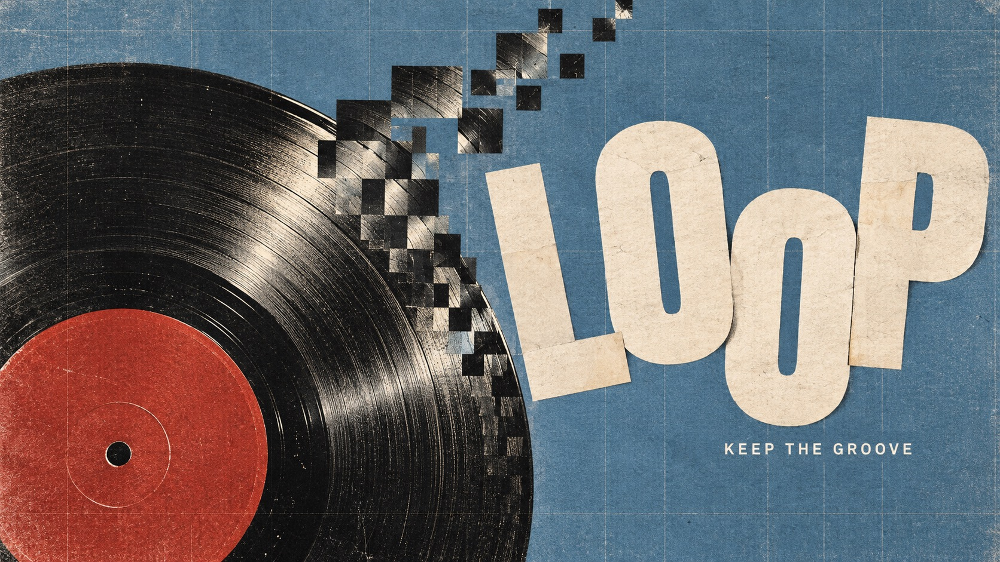
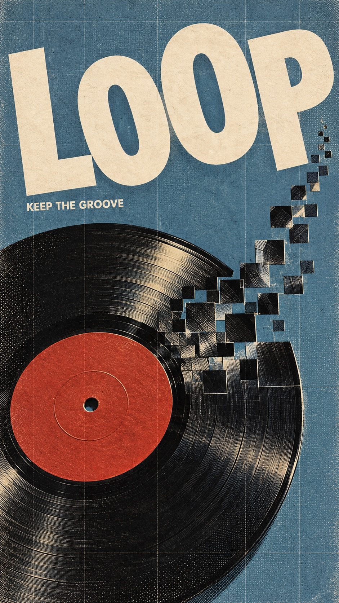
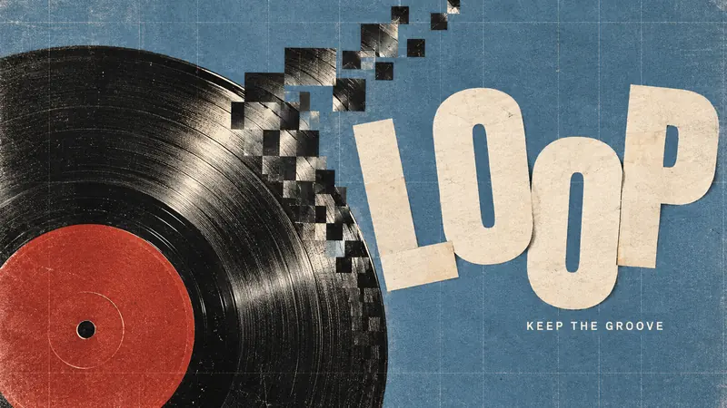
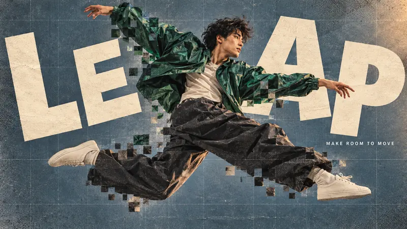
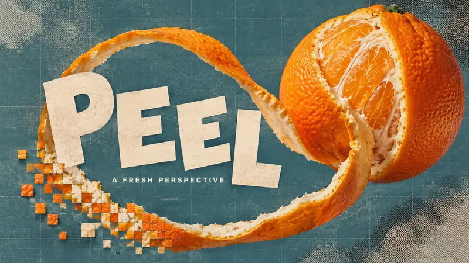
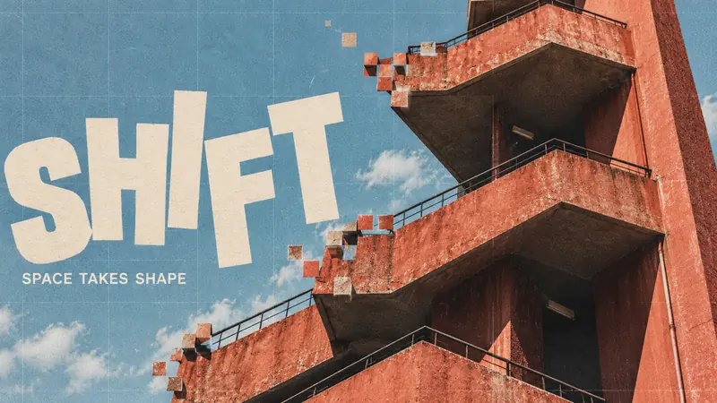

Editorial + Minimal · AI image style prompt
Pixel Weave Editorial
Analog editorial photography with local square pixel displacement, restless ivory cut-out lettering and a fine woven print grid across vinyl, motion, citrus and architecture.


4 example cases
Same style.json, different subjects. Each case's values are in the examples section of the JSON.




What this style does
Analog editorial photography meets local square displacement, restless ivory cut lettering and a fine woven print grid. Four content-led reinterpretations explore circular rhythm, bodily motion, an organic spiral and architectural steps.
Signature traits
- Oversized warm ivory cut-paper sans-serif letters with uneven baselines, varied rotations and scale; expressive but instantly readable.
- High-contrast analog photographic cutouts disrupted locally by square pixel tiles that retain recognizable image fragments, not an all-over mosaic.
- A cool muted color field opposes warm highlights and near-black shadows, with one saturated subject accent.
- A tactile printed surface and fine rectilinear grid unify photography, lettering and background.
- Title placement, silhouette and negative space respond to each theme; portraits are not required.
- Square displacement can express rhythm, motion, peeling or architectural steps while leaving the subject legible.
style.json
{
"schema_version": "2.2",
"style_version": "1.0.0",
"style_name": "Pixel Weave Editorial",
"style_slug": "pixel-weave-editorial",
"style_summary": "Analog editorial photography meets local square displacement, restless ivory cut lettering and a fine woven print grid. Four content-led reinterpretations explore circular rhythm, bodily motion, an organic spiral and architectural steps.",
"category": "Editorial + Minimal",
"environment_variables": {
"ASPECT_RATIO": "9:16 or 16:9",
"STYLE_FIDELITY_ANCHORS": "Joined prioritized style anchors",
"SOURCE_CONTENT_TO_AVOID": "Joined reference content exclusions",
"MAIN_TEXT": "Exact main headline",
"SECONDARY_TEXT": "Exact supporting line",
"SUBJECT": "Photographic subject and palette",
"DESIGN_DIRECTION": "Theme interaction and separate plans for both aspect ratios"
},
"style_fidelity_anchors": [
"[CORE] Oversized warm ivory cut-paper sans-serif letters with uneven baselines, varied rotations and scale; expressive but instantly readable.",
"[CORE] High-contrast analog photographic cutouts disrupted locally by square pixel tiles that retain recognizable image fragments, not an all-over mosaic.",
"[CORE] A cool muted color field opposes warm highlights and near-black shadows, with one saturated subject accent.",
"[CORE] A tactile printed surface and fine rectilinear grid unify photography, lettering and background.",
"[FLEX] Title placement, silhouette and negative space respond to each theme; portraits are not required.",
"[FLEX] Square displacement can express rhythm, motion, peeling or architectural steps while leaving the subject legible.",
"[FLEX] Recompose portrait and landscape independently with balanced text and focal mass, rather than cropping one into the other."
],
"source_content_to_avoid": [
"The original green-cap close-up portrait",
"Hands covering the face and the original facial identity",
"The word Fashion and all original slogans",
"Original footer text, creator identifiers or brand marks"
],
"visual_deconstruction": {
"source_observations": "The supplied portrait has enormous irregular ivory lettering, a green cap, warm hands, a cool blue field, square-displaced photographic fragments, small white copy and a tactile ruled print finish.",
"reusable_system": "Cut typography, selective square collage and analog surface unify the design; cap, gesture and exact layout are source content."
},
"composition": {
"hierarchy": "Oversized readable title and an assertive photographic mass; small supporting copy in useful negative space.",
"adaptation": "Use the ratio-specific design direction; do not preserve a universal title band or center portrait."
},
"typography": {
"headline": "Warm ivory heavy grotesque cut letters, irregular rotation and baseline, varied size but intact glyphs.",
"support": "Small plain white condensed sans-serif, exact wording, modest line breaks allowed."
},
"color_palette": {
"base": "Dusty blue, slate blue or muted teal",
"type": "Warm ivory #F5E9D7",
"dark": "Near-black brown #231E1A",
"accent": "Emerald, brick red, citrus orange or coral concrete according to subject"
},
"image_treatment": "Fine embossed paper fibers across the whole poster at moderate strength, delicate pale vertical and horizontal ruling, visible coarse halftone dots in selected dark/photo regions. Intentionally slightly soft warm analog photo highlights and crisp square-cut tile boundaries. No thick dirt, extreme aging or indiscriminate digital noise.",
"design_rules": [
"Use tile displacement on selected meaningful edges, not every surface.",
"Keep title letters complete enough to read every word.",
"Make the subject action or geometry determine the image-text interaction.",
"Use only the two specified text strings, without invented logos or filler copy."
],
"do": [
"Retain analog photographic lighting and material detail.",
"Create distinct silhouette and spatial logic per case.",
"Use the grid as a subtle unifying overlay."
],
"avoid": [
"Do not repeat the source cap-and-hands portrait.",
"Do not make four interchangeable centered-object posters.",
"Do not replace real photography with flat vector illustration or glossy CGI."
],
"prompt_template": "Create one finished editorial art poster, aspect ratio {ASPECT_RATIO}, full bleed. Visual system: analog photographic collage with restless ivory cut-paper typography and selective square displacement. Prioritized style anchors: {STYLE_FIDELITY_ANCHORS}\nSubject: {SUBJECT}\nDesign intention and ratio plans: {DESIGN_DIRECTION}\nPrint exactly the main headline \"{MAIN_TEXT}\" and supporting line \"{SECONDARY_TEXT}\". Render the headline in huge heavy warm ivory sans-serif cut letters with playful individual rotations and shifted baselines, all glyphs readable. Supporting copy is small white sans-serif. No other text.\nSurface treatment: Fine embossed paper fibers across the whole poster at moderate strength, delicate pale vertical and horizontal ruling, visible coarse halftone dots in selected dark/photo regions. Intentionally slightly soft warm analog photo highlights and crisp square-cut tile boundaries. No thick dirt, extreme aging or indiscriminate digital noise.\nSource content to replace and exclude: {SOURCE_CONTENT_TO_AVOID}\nKeep recognizable photographic forms, strong hierarchy, deliberate negative space and exact text. No branding, watermark, QR code, decorative logos, fake UI or framing mockup. One image only.",
"negative_prompt": "Original cap portrait or hands over face, copied source headline, watermark, logos, QR code, illegible or extra copy, all-over pixelation, uniform smooth vector look, glossy CGI, extra fingers or limbs, unrelated decorative clutter, four-panel montage.",
"examples": [
{
"case_name": "vinyl-loop",
"values": {
"MAIN_TEXT": "LOOP",
"SECONDARY_TEXT": "KEEP THE GROOVE",
"SUBJECT": "An overhead black vinyl record with a vivid brick-red center label, unbranded, lying on a dusty blue surface. Hard side light reveals concentric grooves.",
"DESIGN_DIRECTION": "Make the circular groove the visual engine: one sector breaks into square photographic steps that curl away like a short musical phrase. The record must remain clearly circular and physically photographic. Portrait: giant tilted LOOP above an off-center record in lower two thirds with a curling tile tail upward. Landscape: record cropped at left outer edge, tile rhythm bridges to generous LOOP at right, supporting copy in open blue space."
}
},
{
"case_name": "airborne-leap",
"values": {
"MAIN_TEXT": "LEAP",
"SECONDARY_TEXT": "MAKE ROOM TO MOVE",
"SUBJECT": "One adult contemporary street dancer, full body, in an oversized emerald windbreaker, charcoal wide trousers and plain cream shoes, caught in a sweeping sideways airborne leap. Dusty slate-blue studio backdrop; warm side light.",
"DESIGN_DIRECTION": "Let the bent legs and outstretched arms form a diagonal lightning-shaped silhouette. A few square photographic echoes trail the jacket and trouser edges, expressing movement without duplicating limbs. Portrait: dancer runs diagonally through the central open space, staggered large LEAP follows the upward energy, supporting copy in a quiet corner. Landscape: full-body leap stretches from left to right, title interlocks with empty space above and below the action; hands and face remain natural."
}
},
{
"case_name": "citrus-peel",
"values": {
"MAIN_TEXT": "PEEL",
"SECONDARY_TEXT": "A FRESH PERSPECTIVE",
"SUBJECT": "A monumental real orange partly peeled, with one long curling orange peel ribbon, suspended against dusty teal-blue. Pith, pores and juicy pulp are tactile, warm and photographic.",
"DESIGN_DIRECTION": "The peel forms an open spiral and transforms only at its far tip into square image fragments; use the spiral void as a deliberate typographic counterspace. Portrait: fruit hangs high at the right, long spiral descends with PEEL woven across its open center without covering the fruit. Landscape: orange anchors the right third, curl sweeps left around the title, preserving a broad teal opening. Avoid a literal face or person."
}
},
{
"case_name": "concrete-shift",
"values": {
"MAIN_TEXT": "SHIFT",
"SECONDARY_TEXT": "SPACE TAKES SHAPE",
"SUBJECT": "Low-angle architectural photograph of a single weathered coral-red concrete exterior stair tower and a dark void beneath its landings, cut against muted powder-blue sky. Strong afternoon light, no people.",
"DESIGN_DIRECTION": "Turn the real staircase geometry into a dialogue with square image displacement: a few blocks along the landing edges step outward into the sky. Preserve credible concrete construction and readable stair geometry. Portrait: upward zigzag staircase dominates the right two thirds; oversized SHIFT has an ascending cut-letter rhythm at lower left, sky opens above. Landscape: stairs cut diagonally across the right, title rises across left sky, small copy sits beside the deep shadow. Architecture rather than a generic central object."
}
}
]
}